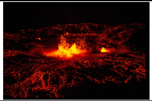
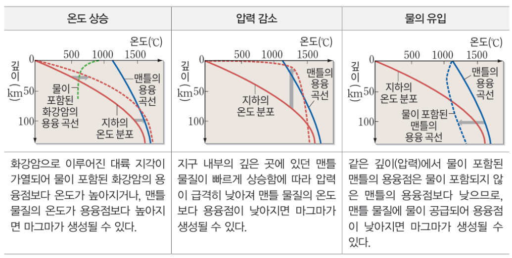
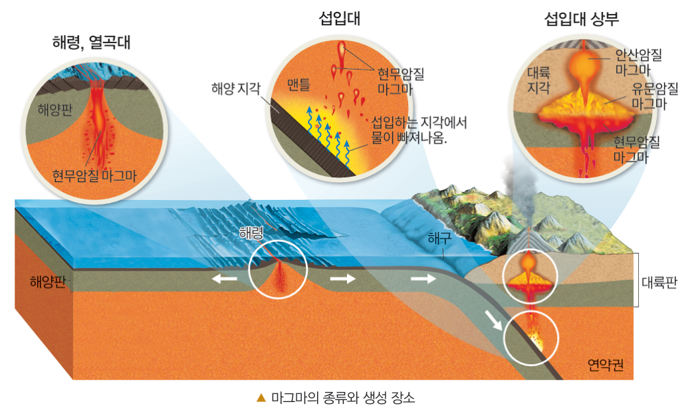
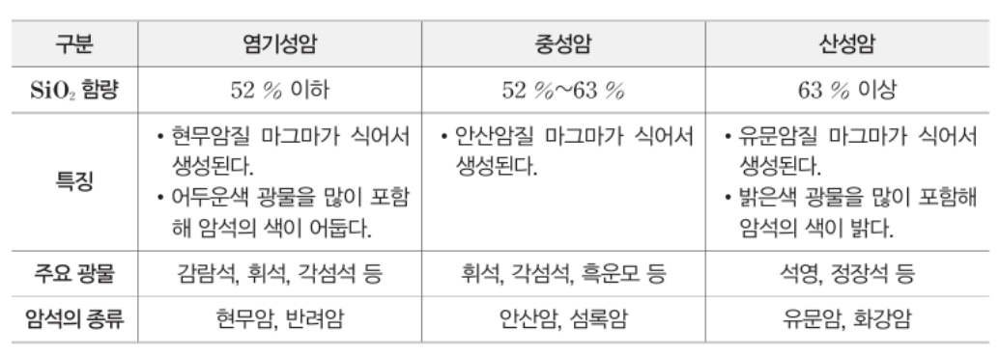
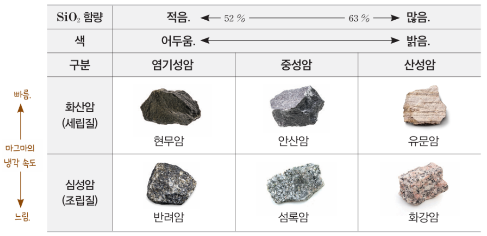
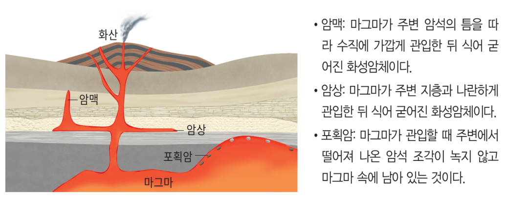
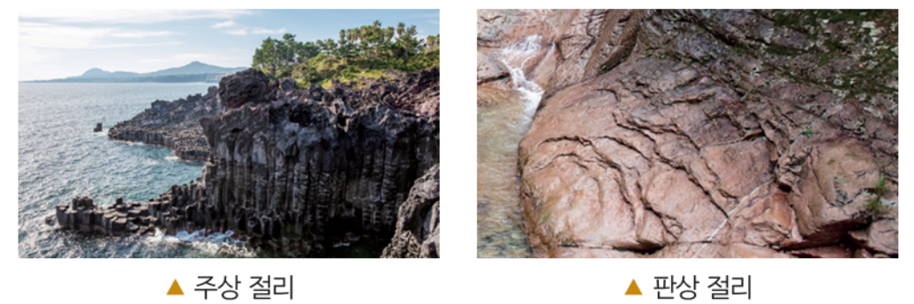
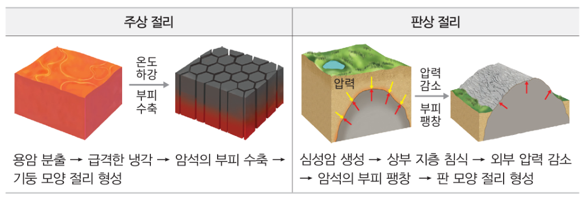

학습 목표 (Learning Objectives)
- ✓변동대에서 다양한 종류의 마그마가 생성되는 조건을 용융 곡선으로 설명할 수 있다.
- ✓마그마의 조성(SiO₂ 함량)과 냉각 속도에 따라 화성암을 분류하고 주상 절리와 판상 절리의 생성 과정을 비교할 수 있다.
핵심 개념 체크리스트
학습을 마친 개념은 직접 체크해보세요!
2026 사대부고 고2 지구과학 자체 교재 원문 기반
동기 유발 · 생각해보기
수업 시작 전 핵심 질문
Q. 지구 내부의 지각과 맨틀은 대부분 단단한 고체 암석 상태이다. 그런데 하와이나 백두산, 일본의 화산에서는 어떻게 뜨거운 액체 상태의 마그마가 만들어져 분출하는 것일까?


💡 먼저 스스로 이유를 추론해 본 뒤 버튼을 눌러 확인해보세요!
✨ 과학적 해설 및 모범 답안
지하의 일반적인 온도 분포는 암석의 용융점(녹는점)보다 낮아 맨틀과 지각은 고체 상태로 존재합니다. 그러나 판의 경계나 열점 등 특정 변동대에서 ① 온도가 상승하거나, ② 압력이 급격히 감소하거나, ③ 물이 공급되어 용융점이 낮아지면 암석이 부분 용융되어 마그마가 생성됩니다.
핵심 개념 1
1. 마그마의 생성 조건과 생성 장소 (매우 중요!)
(1) 깊이에 따른 용융 곡선과 마그마 생성 3가지 경로 (교재 p.45~46)
- •① 압력 감소에 의한 마그마 생성 (해령, 열점, 대륙 열곡대): 뜨거운 맨틀 물질이 상승할 때 압력이 급격히 감소하여 맨틀(감람암)의 용융점이 낮아지므로 물이 포함되지 않은 맨틀이 부분 용융되어 현무암질 마그마가 생성된다.
- •② 물 공급에 의한 용융점 하강 (섭입대 베니오프대 상부 맨틀): 섭입하는 해양 지각과 퇴적물 속 함수 광물에서 빠져나온 물이 상부 맨틀(연약권)에 공급되면 맨틀의 용융점이 크게 낮아져 부분 용융이 일어나 현무암질 마그마가 생성된다.
- •③ 온도 상승에 의한 대륙 지각 용융 (섭입대 대륙 지각 하부): 섭입대 하부에서 생성되어 상승한 뜨거운 현무암질 마그마가 대륙 지각 하부에 열을 공급하면, 온도가 상승하여 물이 포함된 화강암질 대륙 지각이 부분 용융되어 유문암질 마그마가 생성된다.
- •안산암질 마그마의 생성: 섭입대에서 상승하던 현무암질 마그마와 대륙 지각이 녹아 생긴 유문암질 마그마가 혼합되어 생성되며 일본 열도·안데스 산맥 등 섭입대 화산에서 주로 분출한다.

" class="max-h-72 w-auto object-contain rounded-lg group-hover:scale-[1.02] transition duration-300 cursor-zoom-in" onclick="openLightbox(this.src, '교재 그림: <깊이에 따른 지하 온도 분포와 암석의 용융 곡선 (마그마 생성 과정 ①, ②, ③)>')" loading="lazy" />
" class="max-h-72 w-auto object-contain rounded-lg group-hover:scale-[1.02] transition duration-300 cursor-zoom-in" onclick="openLightbox(this.src, '교재 그림: <판의 경계와 열점에서 생성되는 마그마의 종류와 장소>')" loading="lazy" />
핵심 개념 2
2. 화성암의 생성과 분류 (SiO₂ 함량 & 냉각 속도)
(1) 산출 상태(조직)와 화학 조성(SiO₂ 함량)에 따른 화성암 분류표 (교재 p.47)
- •냉각 속도와 결정 크기(조직):
▸ 화산암 (세립질/유리질): 지표 부근에서 빠르게 냉각되어 광물 결정이 자랄 시간이 부족해 결정 크기가 작다.
▸ 심성암 (조립질): 지하 깊은 곳에서 천천히 냉각되어 광물 결정이 충분히 크게 자란다. - •$\text{SiO}_2$ 함량과 암석의 색(밝기):
▸ 염기성암(고철질암, $\text{SiO}_2 \le 52\%$): 철($\text{Fe}$)·마그네슘($\text{Mg}$)을 포함한 유색 광물(감람석, 휘석 등)이 많아 색이 어둡고 밀도가 크다. (마그마 온도가 높고 점성이 작아 순상 화산 형성)
▸ 산성암(규장질암, $\text{SiO}_2 \ge 63\%$): 규소($\text{Si}$)·나트륨·칼륨을 포함한 무색 광물(석영, 정장석 등)이 많아 색이 밝고 밀도가 작다. (마그마 온도가 낮고 점성이 커 종상 화산 형성)
| 구분 (냉각 속도 / 조직) | 염기성암 (SiO₂ ≤ 52%) | 중성암 (52% < SiO₂ < 63%) | 산성암 (SiO₂ ≥ 63%) |
|---|---|---|---|
| 화산암 (지표 급랭 / 세립질) | 현무암 (제주도, 한탄강) | 안산암 | 유문암 |
| 심성암 (지하 서냉 / 조립질) | 반려암 | 섬록암 | 화강암 (북한산, 설악산) |
| 색깔 및 밀도 | 어두운색 (유색 광물 다량) / 밀도 큼 | 중간색 / 밀도 중간 | 밝은색 (석영·장석 다량) / 밀도 작음 |
| 마그마 온도 및 점성 | 온도 높음 / 점성 작음 (유동성 큼) | 중간 | 온도 낮음 / 점성 큼 (폭발적 분출) |

" class="max-h-72 w-auto object-contain rounded-lg group-hover:scale-[1.02] transition duration-300 cursor-zoom-in" onclick="openLightbox(this.src, '교재 그림:
" class="max-h-72 w-auto object-contain rounded-lg group-hover:scale-[1.02] transition duration-300 cursor-zoom-in" onclick="openLightbox(this.src, '교재 그림: <6대 화성암(현무암·안산암·유문암·반려암·섬록암·화강암)의 실제 사진과 특징>')" loading="lazy" />
핵심 개념 3
3. 화성암의 지질 구조 (관입·포획·절리)
(1) 관입암·포획암과 주상 절리 vs 판상 절리 (교재 p.48~49)
- •관입과 포획: 마그마가 주변 암석을 뚫고 들어갈 때 떨어져 나와 마그마 속에 박힌 기존 암석 조각을 포획암이라 한다. 따라서 생성 순서는 항상 포획암(기존 암석) ➔ 관입한 화성암 순이다.
- •① 주상 절리 (Columnar joint): 지표로 분출한 용암(주로 현무암 등 화산암)이 공기와 접촉하여 빠르게 냉각·수축하면서 형성되는 육각형·다각형 기둥 모양의 절리 (예: 제주도 중문 대포 해안, 한탄강, 무등산 입석대)
- •② 판상 절리 (Sheet joint): 지하 깊은 곳에서 생성된 심성암(주로 화강암)이 상부 지층의 풍화·침식 및 융기로 지표에 드러날 때, 외부 압력이 감소하여 암석이 팽창하면서 양파 껍질처럼 얇은 판 모양으로 벗겨지는 절리 (예: 북한산 인수봉, 설악산 울산바위)

" class="max-h-72 w-auto object-contain rounded-lg group-hover:scale-[1.02] transition duration-300 cursor-zoom-in" onclick="openLightbox(this.src, '교재 그림: <관입암과 포획암의 산출 양상 및 변성 범위>')" loading="lazy" />
" class="max-h-72 w-auto object-contain rounded-lg group-hover:scale-[1.02] transition duration-300 cursor-zoom-in" onclick="openLightbox(this.src, '교재 그림: <주상 절리(화산암·냉각 수축)와 판상 절리(심성암·압력 감소 팽창) 사진>')" loading="lazy" />
" class="max-h-72 w-auto object-contain rounded-lg group-hover:scale-[1.02] transition duration-300 cursor-zoom-in" onclick="openLightbox(this.src, '교재 그림: <주상 절리와 판상 절리의 형성 과정 비교>')" loading="lazy" />
Interactive Checkpoints
클릭하면 교재 빈칸 정답과 해설이 나타납니다
단원 개념 적용하기 & 확인 문제
Q1
교재 p.45~46 핵심 체크: 해령(발산형 경계)과 섭입대(수렴형 경계)의 베니오프대 상부 맨틀에서 현무암질 마그마가 생성되는 원리는 각각 무엇인가?
모범 답안 및 해설
• 해령: 맨틀 물질이 상승함에 따라 압력이 감소하여 물이 포함되지 않은 맨틀이 부분 용융됩니다.• 섭입대: 섭입하는 해양 지각에서 빠져나온 물이 상부 맨틀에 공급되어 맨틀의 용융점이 낮아짐으로써 부분 용융됩니다.
Q2
교재 p.49 확인: 제주도 해안의 주상 절리와 북한산 정상부의 판상 절리를 이루는 암석의 종류(화산암/심성암)와 절리의 생성 원인을 비교하시오.
모범 답안 및 해설
• 제주도 주상 절리: 화산암(현무암)으로 이루어져 있으며, 지표로 분출한 용암이 급격히 냉각·수축하여 생성되었습니다.• 북한산 판상 절리: 심성암(화강암)으로 이루어져 있으며, 지하 깊은 곳의 암석이 융기·침식으로 지표에 노출되면서 압력 감소에 의해 팽창하여 생성되었습니다.